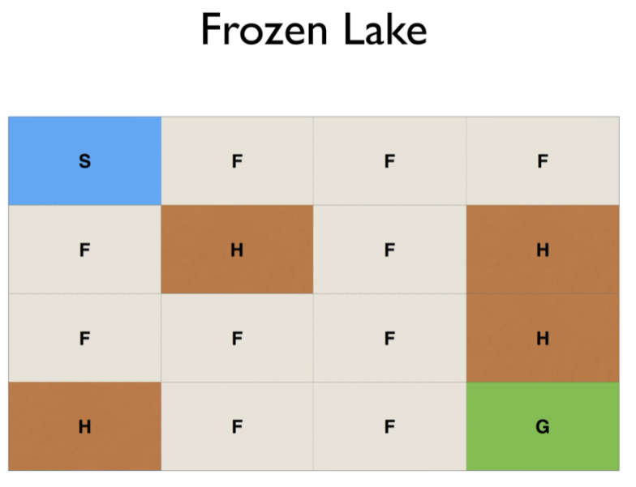
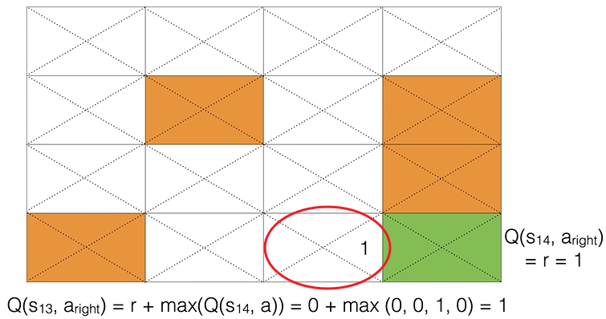
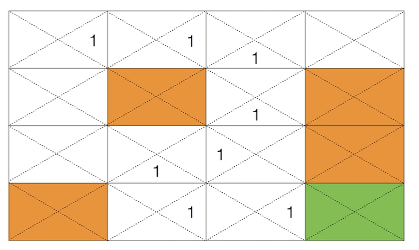

고등학교용
죄수의 딜레마 Q-learning 탐구 활동지
벨만 방정식과 성격 기반 보상함수로 이해하는 강화학습
탐구 목표 Q-learning의 벨만 방정식과 시간차 학습 구조를 이해하고, 성격 점수가 보상함수의 계수로 작동하는 원리를 계산을 통해 확인한 뒤, 실제 실험 데이터로 성격과 협력률의 관계를 분석한다.
0. 사전 생각지금 생각을 표시하세요. 점수에 반영하지 않습니다.
1) 강화학습 에이전트는 상태 전이 확률 P(s′|s,a)를 몰라도 최적 정책에 수렴할 수 있다.☐ 그렇다 ☐ 아니다
2) 보상을 정하는 기준이 달라지면 같은 게임에서도 다른 전략이 최적으로 학습될 수 있다.☐ 그렇다 ☐ 아니다
3) 두 변인의 피어슨 상관계수가 0에 가까우면 두 변인은 아무 관련이 없다고 단정할 수 있다.☐ 그렇다 ☐ 아니다
1. Q-learning이란Frozen Lake 예시로 개념을 먼저 확인합니다.
에이전트는 전체 지도를 보지 못하고 현재 상태만 파악할 수 있으며, 목적지에 도착해야만 보상을 받으므로 도중에는 자기 행동이 좋은지 알 수 없다. 그래서 상태 s와 행동 a에 대한 가치를 저장하는 Q함수가 필요하다. 아래 예시로 그 과정을 확인해보자.
① 문제 설정

S(시작)에서 G(목표)까지 이동해야 하며 H(구멍)에 빠지면 실패한다. 에이전트는 현재 상태만 관측 가능하다.
② Q값 갱신 1회

상태 s₁₃에서 오른쪽으로 이동하면 목표에 도달하므로 Q(s₁₃, aright) = r + max Q(s₁₄, a) = 0 + 1 = 1로 갱신된다.
③ 학습 수렴

위 갱신을 반복하면 목표까지 이어지는 경로 위의 상태들에 순차적으로 Q값이 채워지고, 정책 π(s) = argmax Q(s,a)로 최단 경로를 찾을 수 있다.
확인 문제) Q함수가 상태와 행동을 입력받아 출력하는 것은 무엇인가?
☐ 다음 상태의 좌표☐ 그 행동을 했을 때 기대할 수 있는 가치☐ 지나온 경로의 길이
2. 개념 확인 | Q-learning의 수학적 구조
Q(s, a) ← Q(s, a) + α [ r + γ · max Q(s′, a′) − Q(s, a) ]
① α
② γ
③ r + γmaxQ(s′,a′) − Q(s,a)
④ max Q(s′, a′)
ㄱ. TD 오차
ㄴ. 학습률
ㄷ. 다음 상태에서 얻을 수 있는 최대 가치
ㄹ. 감쇠율(미래 보상을 얼마나 반영할지)
확인 문제) 학습 초반에 ε를 1.0 가까이 크게 두고, 학습이 진행될수록 0.05까지 줄이는 이유로 가장 알맞은 것은?
☐ 계산 속도를 높이기 위해서
☐ 초반에는 다양한 행동을 시도(탐험)하고, 후반에는 학습한 대로 행동(활용)하기 위해서
☐ 보상을 더 많이 받기 위해서
3. 상태 공간 계산최근 M라운드의 (내 행동, 상대 행동) 기록을 상태로 사용합니다.
한 라운드의 결과는 협력(C) 또는 배신(D) 2가지이고, 나와 상대의 행동을 함께 기록하므로 한 라운드당 2비트가 필요하다. 이번 활동에서는 최근 M = 3라운드를 기억한다.
상태 개수 = 2 ^ (2M), M = 이므로 2 ^ (2 × ) = 가지
4. Loop 1 | 가설 세우기설문 전, 보상함수 계수를 근거로 예측합니다.
| 성격 | 보상함수에서의 역할 | 내 예상 점수(0~1) | 이 특성이 협력/배신에 줄 영향 예측 |
|---|
| 공감 e | 상호협력 시 +e×2.0, 배신당하면 −e×1.0 | | |
| 경쟁심 c | 점수차×c×0.8 만큼 가산 | | |
| 위험회피 r | 0점(협력했는데 배신당함) 시 −r×2.0 | | |
| 용서 f | 배신→협력 복귀 시 +f×1.5 | | |
내 예상 Q(협력)과 Q(배신) 중 어느 쪽이 더 클지, 그렇게 예상한 근거
5. Loop 2 | 계산으로 검증하기내 성격 점수를 실제 보상함수 식에 대입해봅니다.
내 공감 점수 e =
상호협력 보너스 = e × 2.0 =
내 위험회피 점수 r =
배신당했을 때 추가 손실 = r × 2.0 =
계산한 값이 내 에이전트의 실제 학습 결과(Q값, 협력률)와 어떻게 연결되는지 서술
6. Loop 3 | 상관관계 분석모둠 전체 데이터를 모아 경향성을 판단합니다.
| 참가자 | 공감 점수 | 경쟁심 점수 | 실제 협력률(%) |
|---|
| 나 | | | |
| | | |
| | | |
| | | |
| | | |
공감 점수와 협력률의 관계
☐ 양의 상관(공감 ↑ 협력률 ↑)
☐ 음의 상관
☐ 뚜렷한 관계 없음
표를 보고 판단한 근거 (점 몇 개가 이 경향을 벗어나는지도 함께 서술)
7. 실제 실험 결과 기록웹앱 결과 화면에서 확인한 나의 최종 수치를 정확히 옮겨 적습니다.
| 평균 점수 | 협력률 | 전략 유형 | Q(협력) 평균 | Q(배신) 평균 | 협력 선호 상태 수 |
|---|
| % | | | | / 64 |
3번에서 세운 가설, 4번의 계산값, 6번의 실제 결과를 비교했을 때 가설이 얼마나 맞았는지
8. 모델의 한계 성찰
이 활동의 결과가 실제 인간의 행동을 완벽하게 예측하는 것은 아니다. 설문 결과를 수학적으로 단순화하여 보상함수에 적용한 모형이므로, 실제 사람의 복잡한 판단과는 차이가 있을 수 있다.
이 모델이 실제 사람의 성격과 행동을 단순화한 부분은 어디라고 생각하는지, 보완한다면 무엇을 추가하고 싶은지
9. 디브리핑
1) 강화학습 에이전트는 상태 전이 확률을 몰라도 최적 정책에 수렴할 수 있다.☐ 그렇다 ☐ 아니다
2) 보상을 정하는 기준이 달라지면 같은 게임에서도 다른 전략이 최적으로 학습될 수 있다.☐ 그렇다 ☐ 아니다
3) 상관계수만으로 두 변인의 인과관계까지 단정할 수는 없다.☐ 그렇다 ☐ 아니다
한 문장 결론 “보상의 기준을 바꾸는 것만으로 정말 다른 전략이 학습되는가, 내 데이터는 무엇을 보여주는가”